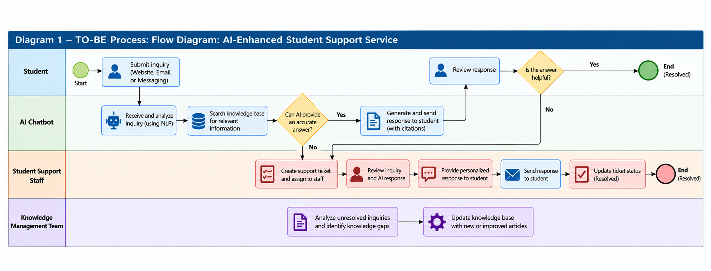
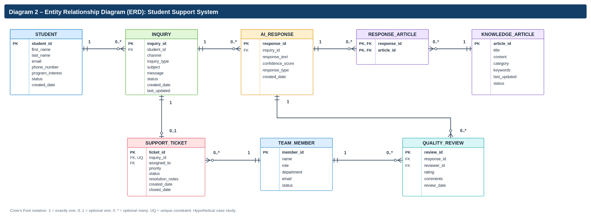
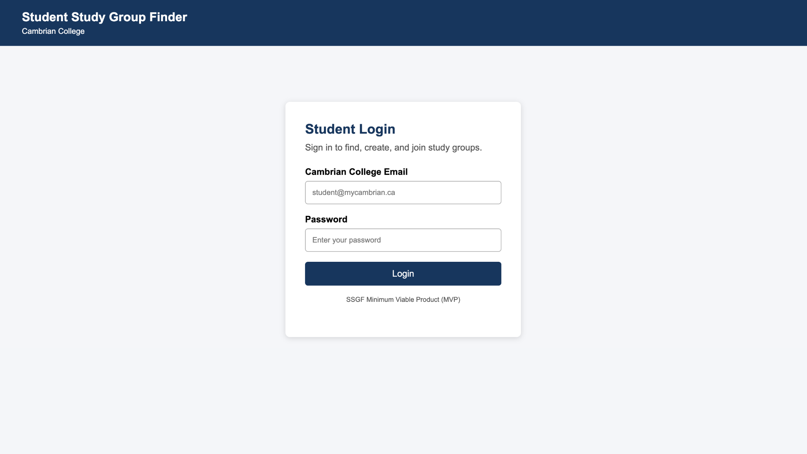

Cambrian College
Canada · Postgraduate studies
I.T. Business Analysis
GPA 4.0 / 4.0
Business requirements, stakeholder analysis, process modeling, user stories, acceptance criteria, business systems analysis, and requirements documentation.
Accounting and Auditing · I.T. Business Analysis
Bridging business needs and technology through analytical thinking, process improvement, and practical problem-solving.
Explore My ProjectsAcademic BackgroundI am a detail-oriented professional with an interdisciplinary background in Accounting and I.T. Business Analysis. My academic journey spans Vietnam and Canada, combining knowledge of financial operations, business processes, and technology-driven solutions.
I studied Accounting at Hoa Sen University and completed postgraduate studies in I.T. Business Analysis at Cambrian College with a GPA of 4.0/4.0. I also completed the Graduate Foundation Program at the University of Niagara Falls Canada with a GPA of 3.89/4.33, and received admission to the Master of Business Administration (MBA) program at University Canada West.
My experience in admissions counseling and billing coordination has helped me develop communication, stakeholder coordination, and organizational skills. I am interested in business requirements analysis, stakeholder collaboration, process improvement, and business-focused digital transformation.
Canada · Postgraduate studies
I.T. Business Analysis
Business requirements, stakeholder analysis, process modeling, user stories, acceptance criteria, business systems analysis, and requirements documentation.
Canada · Graduate preparation
Graduate Foundation Program (GFP)
Academic preparation, research, critical thinking, and communication for graduate-level studies.
Vietnam
Accounting
Foundational study in financial accounting, reporting, financial analysis, and business operations.
Completed an I.T. Business Analysis capstone project and received admission to the Master of Business Administration (MBA) program at University Canada West.
Hoa Sen University – Online Training Institute
Supported prospective students with program information, admissions inquiries, and enrollment guidance, developing communication, student support, and coordination skills.
DatVietMedia – DatVietVAC Group Holdings
Worked in billing-related operations and financial administration, developing attention to detail, financial documentation, and cross-functional communication skills.
Requirements gathering, stakeholder analysis, process modeling, user stories, acceptance criteria, and data modeling fundamentals.
Accounting fundamentals, billing coordination, financial documentation, business operations, and analytical thinking.
Microsoft Excel, Word, PowerPoint, Draw.io, Trisotech, GitHub, and project documentation tools.
Communication, collaboration, problem-solving, critical thinking, organization, and adaptability.
Capstone · I.T. Business Analysis
Analyzed and designed a proposed knowledge-based student support assistant to improve access to approved university information and support escalation to staff when needed.
Key activities: Requirements analysis, stakeholder identification, user stories, acceptance tests, business process modeling, and entity relationship modeling (ERD).
Deliverables: Capstone report, process diagram, ERD, sample user stories, acceptance tests, and presentation.


Web-based project
A web-based student collaboration project exploring how students can connect with peers and find study group opportunities.
This academic minimum viable product (MVP) explores student needs, collaborative study groups, and a web-based interface. It is presented as a project experience rather than a software engineering specialization.

I am interested in opportunities in Business Analysis, business systems, financial operations, and business process improvement. My goal is to help organizations translate business needs into practical solutions.
Location: Canada